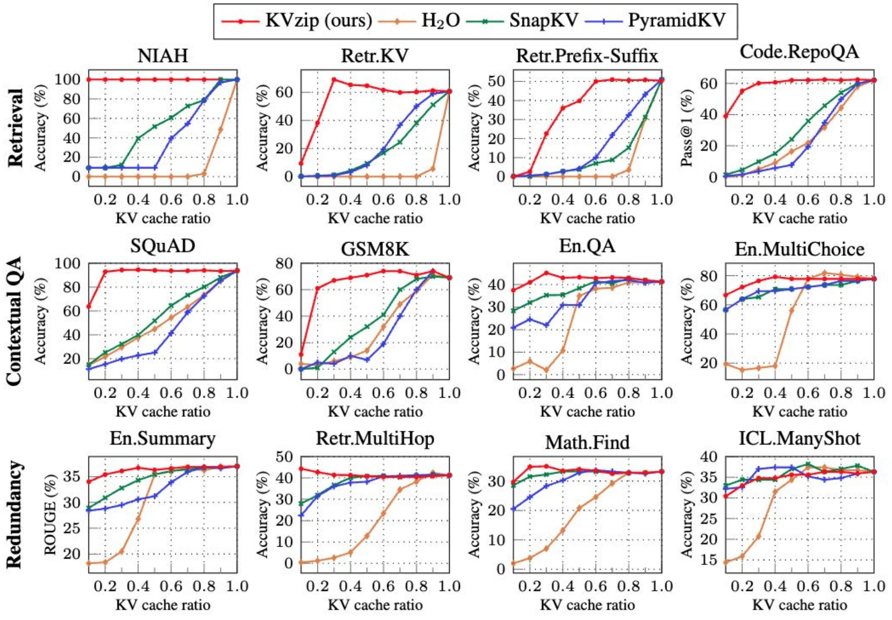
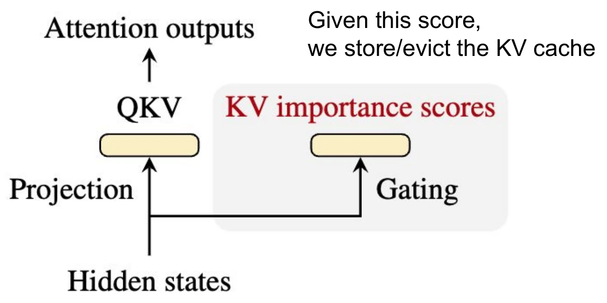
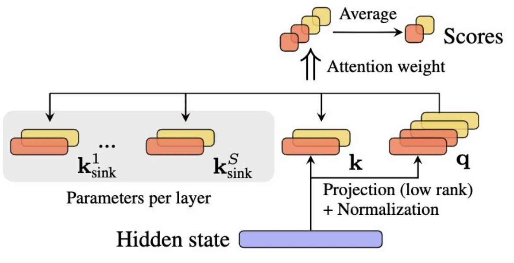
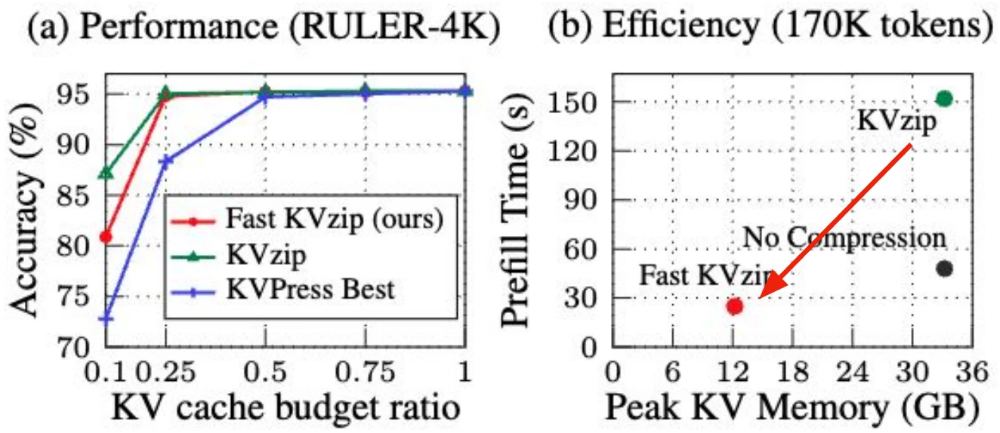
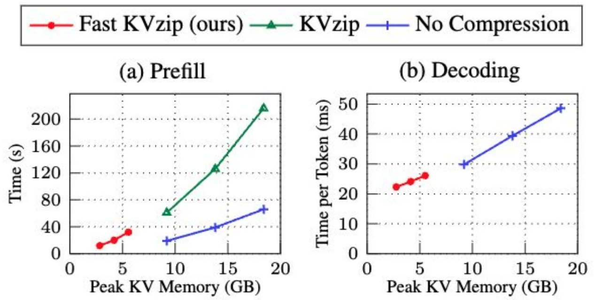
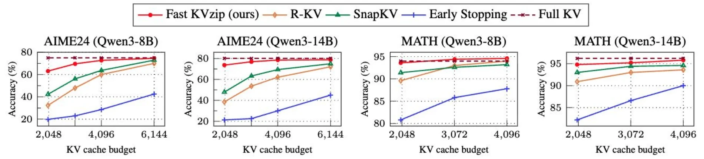

Part 1: Retain
Selective memory
How do models retain the context that future queries will need?
Retain
Use
Predict
Selective memoryRetain useful context
Safety-aware learningCondition the use of dual-use knowledge
Predictive world modelsLearn from diverse visual experience and demonstrations
KVzip NeurIPS’25
Fast KVzip NeurIPS’26
Mark, Don’t Erase NeurIPS’26
Seoul World Model ECCV’26
LaLa-World arXiv soon
WATCH arXiv’26
Efficient
Reliable & Grounded
Key-value cache: memory grows with every token
- Each new token attends to the cached keys and values of every previous token.
- KV memory = 2 × layers × KV heads × head_dim × seq_len × bytes
- Llama-3-8B (32 layers, 8 KV heads, d = 128, fp16): 128 KB per token
- At ~123K tokens the KV cache is as large as the model.
- Compressing KV caches → efficient inference
Llama-3-8B, fp16, single sequence. Weights ≈ 16 GB.
Llama-3-8B shape (32 layers, 8 KV heads, model dim 4,096): Llama Team, “The Llama 3 Herd of Models”, 2024
KV cache compression: which KV pairs should we keep?
H2O (NeurIPS’23); SnapKV (NeurIPS’24); PyramidKV
NeurIPS’25 (Oral presentation)
KVzip: Query-Agnostic KV Cache Compression with Context Reconstruction
Jang-Hyun KimSNU
Jinuk KimSNU
Sangwoo KwonSNU
Jae W. LeeSNU
Sangdoo YunNAVER AI Lab
Hyun Oh SongSNU
arXiv:2505.23416github.com/snu-mllab/KVzipjanghyun1230.github.io/kvzip
KVzip: a good compression can reconstruct the original
n ≈ 30M = 32 layers × 8 KV heads × 120K tokens (Llama-3-8B); Kim et al., “KVzip: Query-Agnostic KV Cache Compression with Context Reconstruction”, NeurIPS 2025
KVzip – results

3–4×
smaller KV cache, negligible loss
~2×
faster decoding (FlashAttention)
LLaMA3.1, Qwen2.5, Gemma3
QA, retrieval, reasoning, code
Query-aware baselines degrade even at a 90% budget when the cache is reused across queries.
Qwen2.5-7B-Instruct-1M, query-agnostic setting (one compressed cache, many queries)
KVPress benchmark 88% compression
−3.2%
KVzip vs. no compression, with 88% of the cache removed
−23.6%
best other method (ExpectedAttention)
KVzip needs extra forward passes for reconstruction.
NVIDIA KVPress leaderboard
KVzip’s bottleneck – increased prefill time
Qwen2.5-7B-1M, 170K tokens, H100
LM
Context + [Repeat prompt] + Context
Context reconstruction runs at runtime:
about 3× the prefill time of no compression.
NeurIPS’26
Fast KVzip: Efficient and Accurate LLM Inference with Gated KV Eviction
Jang-Hyun KimNAVER AI Lab
Dongyoon HanNAVER AI Lab
Sangdoo YunNAVER AI Lab
arXiv:2601.17668janghyun1230.github.io/fastkvzip
Fast KVzip – motivation save memory, keep what the future needs
10 tokens × 4 layers (layer 1 at the bottom), one cell per KV pair; Mixture-of-Depths (Raposo et al., 2024); MoBA (NeurIPS’25); DeepSeek Sparse Attention (DeepSeek-V3.2-Exp, 2025)
Fast KVzip – gated KV eviction
Compute the importance score of KV caches in runtime using “gate modules”
A gate looks at the hidden state, and predicts if it will be useful in the future


Our gate: lightweight, attention-like (low-rank sink attention)
Distilled from KVzip
Gates learn KVzip’s reconstruction scores; the LLM stays frozen.
Cheap to train
Forward passes only, no backprop through the LLM; under 1 H100 hour.
Prefill and decoding
Scores are ready as each token is written, so eviction happens on the fly.
Fast KVzip at 170K tokens no reconstruction pass, lower peak memory
≈6×
faster prefill than KVzip, and faster than no compression
≈⅓
of the peak KV memory: eviction happens during prefill
same
decoding speed as KVzip at a 30% budget
Qwen2.5-7B-1M, 30% KV budget, PyTorch + FlashAttention-2, H100
Fast KVzip – results near-lossless up to 70% eviction

Performance and prefill cost

Inference efficiency (Qwen2.5-7B-1M, 30% budget, H100)

Reasoning tasks: Fast KVzip stays close to the full cache at a 2K–6K token budget
Models: Qwen2.5-1M, Qwen3, Gemma3; tasks: long-context understanding, code comprehension, math reasoning
KVPress benchmark 88% compression, full leaderboard
−3.2%
KVzip vs. no compression, with 88% of the cache removed
−6.9%
Fast KVzip, single forward pass
−23.6%
best other method (ExpectedAttention)
KVzip needs extra forward passes for reconstruction; Fast KVzip removes them.
NVIDIA KVPress leaderboard